hossam 테마 강의
코딩 강의용 테마. 처음 열면 어두운 바탕(d 키로 밝게). 상자는 모두 직각(1px 가는 선 · 4px 윗선, 그림자 없음). 왼쪽 목차 사이드바, 표지·간지·카드형·웹진형·인포그래픽 레이아웃, 상자(콜아웃·프롬프트·출력·번호 머리띠)·타일·핵심 한 줄·칩과 번호 목록(단계·흐름도·타임라인) 컴포넌트가 있다.
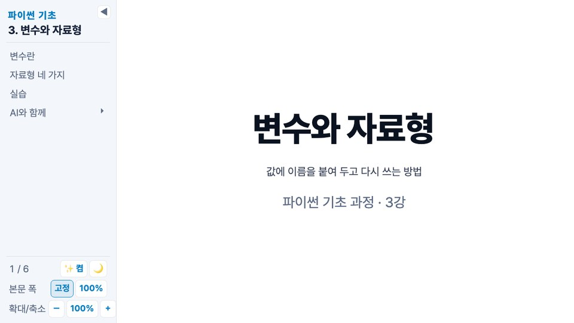
시작하기
저장소를 받은 뒤(git clone https://github.com/leekh4232/slidev-themes.git) 프런트매터에 테마 폴더 경로(theme: ./slidev-themes/hossam처럼 md 파일 기준)를 적는다. 첫 슬라이드의 프런트매터(헤드매터)에서 아래 옵션으로 덱 전체 모양을 정한다.
| 옵션 | 값 | 기본 |
|---|---|---|
colorMode | light면 밝은 테마, dark면 어두운 테마로 덱을 연다. 발표 중에는 d 키로 바꿀 수 있고, 다시 열면 이 값으로 돌아간다 | 처음 한 번 어둡게, 그 뒤엔 마지막에 고른 테마 |
exportDark | true면 PDF·PNG 내보내기를 발표 화면처럼 어두운 테마로, false면 밝은 테마로 | true (colorMode를 적었으면 그 테마) |
fontScale | 본문 배율(0.6~2). 덱을 이 배율로 열고, 0 키·배율 버튼을 누르면 이 값으로 돌아간다. 사이드바가 없어도, PDF·PNG 내보내기에도 적용된다 | 마지막에 고른 배율 |
sidebar | true면 발표 화면 왼쪽에 목차 사이드바(슬라이드 바깥), false면 사이드바 없이 슬라이드만 | true |
title은 · (가운뎃점 양옆 공백)를 기준으로 앞은 과정 이름, 뒤는 단원 이름으로 사이드바에 올라간다. 첫 슬라이드는 layout: cover로 쓴다. 표지는 세 과목색(파랑·주황·초록)이 천천히 번지는 배경 위에 그라디언트 제목, 테두리 상자 부제(.sub), 아래 세 색 막대가 놓이고, title의 · 앞부분(과정 이름)이 위쪽 머리말로 자동으로 올라간다. 프런트매터 author를 적으면 부제 아래에 작성자가 사람 아이콘과 함께 놓이고, eyebrow로 머리말을 바꾸고, footer로 막대 아래 작은 글을 둘 수 있다. 등장 애니메이션은 사이드바의 애니메이션 끄기와 운영체제의 동작 줄이기 설정을 따라 꺼진다.
---
theme: ./slidev-themes/hossam
sidebar: true # 생략 가능 (기본값)
colorMode: dark # 생략 가능. light | dark
fontScale: 1.1 # 생략 가능. 본문 배율 0.6~2
title: 파이썬 기초 · 3. 변수와 자료형
author: 홍길동 강사 # 생략 가능. 표지 부제 아래 작성자
layout: cover
---
# 변수와 자료형
값에 이름을 붙여 두고 다시 쓰는 방법
<p class="sub">파이썬 기초 과정 · 3강</p>사이드바와 조작
헤더의 sidebar가 켜져 있을 때 보인다(기본은 켬). 목차는 슬라이드마다 첫 제목을 모아 만든다. 표지(1쪽)와 프런트매터에 hideInToc: true를 적은 슬라이드(종료 페이지 등)는 목록에 넣지 않고, 사이드바 맨 위의 과정·단원 이름을 클릭하면 표지로 간다. 제목에서 — 뒤의 부제와 맨 앞 이모지는 목차에서 뗀다(#01. 같은 번호의 #은 남긴다). 항목은 한 줄로 보이고, 넘치면 말줄임(…)으로 줄인다. 마우스를 올리면 전체 제목이 보인다. 항목을 클릭하면 그 쪽으로 이동한다.
### 제목으로 시작하는 슬라이드는 바로 위 ## 항목 아래로 묶여 접힌다. 묶음이 있는 항목 오른쪽의 ▸를 누르면 펼쳐지고, 한 번에 한 묶음만 열린다. 슬라이드를 넘기면 그 슬라이드가 든 묶음이 저절로 열리고, 목차는 현재 항목이 가운데 오도록 스크롤된다.
| 키 | 동작 |
|---|---|
| → ← Space | 다음·이전 |
| s | 사이드바 접기·펼치기(◀ / ☰ 버튼). 접으면 왼쪽 위에 반투명한 ☰ 버튼만 남고, 거기에 마우스를 올리면 선명해지면서 애니메이션 · 테마 · 확대/축소 버튼이 오른쪽으로 펼쳐진다. 오른쪽 가장자리를 끌면 폭 조절, 더블클릭이면 기본 폭 |
| a | 애니메이션 켬·끔. 끄면 클릭 단계(v-click)가 전부 보이고 화살표가 슬라이드 단위로 움직인다 |
| d | 밝은·어두운 테마 전환(🌙 / ☀️ 버튼). 처음 열면 어두운 테마이고, 고른 값은 브라우저에 기억된다 |
| + - 0 | 본문 확대·축소·기본 크기(사이드바의 － / 100% / ＋ 버튼, 60~200%. 가운데 배율 버튼을 누르면 100%로 돌아간다. 사이드바를 접었을 때는 왼쪽 위 ☰ 버튼에 마우스를 올리면 같은 세 버튼이 펼쳐진다). 캔버스는 그대로고 글자·여백만 바뀐다. 커져서 넘치면 잘린다 |
사이드바 폭·접힘·애니메이션·테마·배율은 브라우저에 기억된다. 슬라이드는 항상 16:9(1280×720)이고, 사이드바를 뺀 나머지 창에 맞춰 비율 그대로 확대·축소된다. 내용이 캔버스를 넘치면 스크롤되지 않고 잘린다. 그때는 슬라이드 안쪽에 빨간 테두리와 넘친 길이(예: 내용 넘침 ↓120px)가 떠서, 그만큼 내용을 줄이면 된다(발표 화면에서만 보이고 내보내기에는 없다). 화면의 캔버스는 배율이 fontScale(생략하면 100%)일 때 PDF·PNG 내보내기 결과와 같다. 발표자 모드·개요·내보내기·브라우저 인쇄에는 사이드바가 없고 슬라이드가 창 전체를 쓴다. HTML로 빌드하면 그림은 데이터 URI로 묻혀 이미지 파일 없이도 열리고, PDF·PNG 내보내기는 어두운 테마(exportDark)로 찍히며 상자 그림자와 등장 애니메이션을 끈다(PDF 렌더가 그림자를 회색 띠로 찍고, 애니메이션 도중에 찍히면 요소가 빠진다).
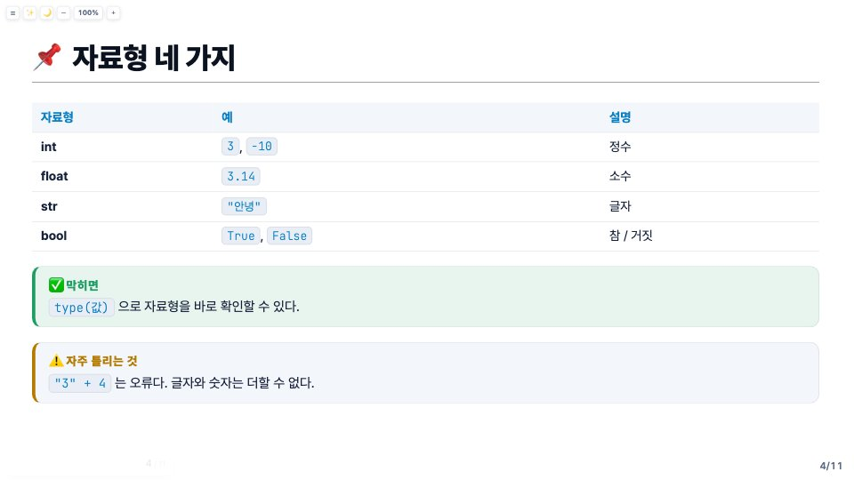
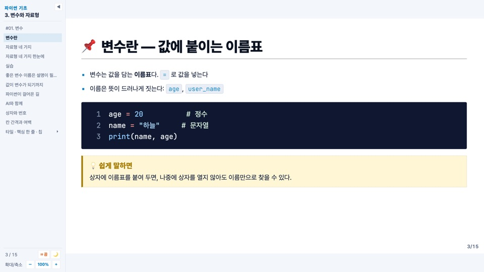
글쓰기
#큰 제목,##앞에 📌가 붙고 밑줄이 있는 슬라이드 제목,###그보다 조금 작고 밑줄이 있는 소제목(목차에서 하위 항목). 카드 안의<h3>은 작은 제목 그대로다.- 목록 글머리는 파랑 ■, 둘째 수준은 회색 –, 셋째 수준은 ·. 링크는 파랑, 인라인 코드(백틱 하나)는 연한 상자,
**굵게**는 본문색 그대로 굵게. - 인용(
>문단)은 왼쪽에 회색 세로선만 둔 큰 글. 한 줄 요약이나 안내 문구에 쓴다. - 코드 블록은 흰 바탕 위의 어두운 직각 상자. 줄 번호가 기본으로 켜져 있고(
lineNumbers: true), 주석은 설명이라 밝은 초록으로 보인다. 글꼴은 JetBrains Mono. 상자보다 긴 줄은 가로 스크롤 없이 줄을 바꾸고, 바뀐 줄은 줄 번호 폭만큼 들여 코드 시작에 맞춘다. - 슬라이드를 열면 제목을 뺀 본문 요소(문단·목록·표·코드·콜아웃·카드 …)가 위에서부터 차례로 아래에서 떠오른다. Grid 안의 칸도 같은 효과로 이어진다. 사이드바의 애니메이션 끄기(a)로 끈다.
- 표는 머리글이 굵은 파란 글씨에 연한 바탕. 첫 열(항목 이름)은 굵게, 줄바꿈 없이 한 줄로 보인다. 첫 열이 표 폭의 30%를 넘을 만큼 길면 자동으로 줄바꿈을 허용한다. 슬라이드 프런트매터에
class: tbl-wrap(항상 줄바꿈) 또는class: tbl-nowrap(항상 한 줄)을 적으면 자동 판정 대신 그 값을 쓴다. 본문은 문단보다 불릿 목록으로 쓰고, 나열형 내용은 카드형(cards)으로 둔다. 간지 · 카드형 · 웹진형 · 인포그래픽은 레이아웃에 있고, 여러 단으로 나눌 때는 Grid를 쓴다. - 모든 슬라이드 오른쪽 아래에 쪽 번호가
현재/전체꼴로 붙는다. 사이드바를 꺼도, PDF·PNG 내보내기에도 들어간다.
## 변수란 — 값에 붙이는 이름표
- 변수는 값을 담는 **이름표**다. `=` 로 값을 넣는다
- 이름은 뜻이 드러나게 짓는다: `age`, `user_name`
```python
age = 20 # 정수
name = "하늘" # 문자열
print(name, age)
```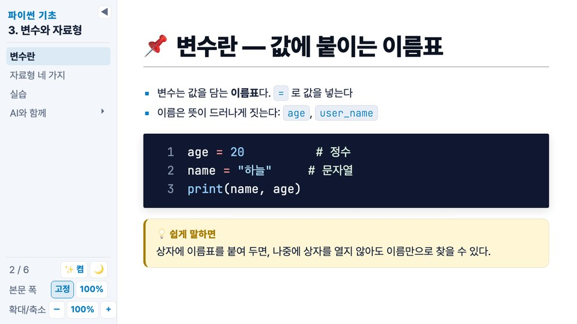
레이아웃
슬라이드 프런트매터의 layout으로 고른다. 적지 않으면 default. Slidev 기본 레이아웃(center, two-cols, image-right …)도 그대로 쓸 수 있다.
| layout | 모양 | 프런트매터 |
|---|---|---|
default | 본문. 제목 아래에 불릿 · 코드 · 표 · 콜아웃이 위에서부터 흐른다 | - |
cover | 표지. 가운데 정렬, 색이 번지는 배경, 그라디언트 제목, 테두리 상자 부제(.sub), 작성자, 세 색 막대 | author eyebrow footer |
section | 간지(파트 표지). 왼쪽 정렬, 위에 덱 제목 머리말, 제목 왼쪽 세로 막대, 아래 세 색 막대. 제목 뒤 문단은 부제 | - |
cards | 카드형. 제목 아래의 <div> 칸(또는 Tile)들이 직각 카드 격자가 된다. 칸만 있으면 남은 높이를 나눠 채우고, 불릿 · 인용 · 콜아웃 · Core는 전체 폭 한 줄로 놓인다 | cols(기본 3) |
magazine | 웹진형. 왼쪽 큰 제목 + 리드문 + 본문, 오른쪽 ::right:: 칸. 칸의 첫 요소가 그림이면 옅은 파란 띠가 되어 세로로 가득 채우고, 아니면 본문과 같은 바탕 | - |
infographic | 인포그래픽. 제목은 위, 나머지는 점 무늬 위에 가운데 정렬된 무대. Flow · Stat · Grid를 올려 놓는다 | - |
section — 간지
단원 안의 파트를 나누는 중간 표지. # 제목 하나를 쓰고, 그 아래 문단은 부제가 된다. 머리말에는 덱 title(과정 · 단원)이 자동으로 올라간다.
---
layout: section
---
# #01. 변수
값에 이름을 붙이면 다시 꺼내 쓸 수 있다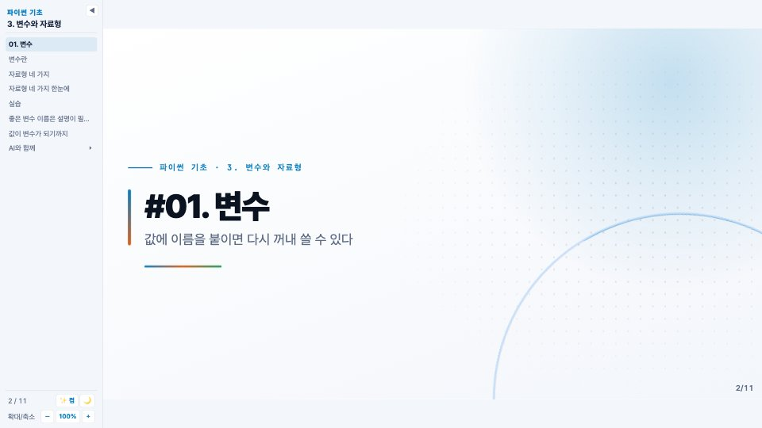
cards — 카드형
<div>로 감싼 칸이 카드(직각, 1px 선, 4px 윗선)가 된다. 안의 마크다운(#### 제목, 문단, 목록)은 여는 태그와 닫는 태그를 빈 줄로 띄운다. 윗선은 기본 파랑이고 칸에 py · ai · ok 클래스를 주면 그 색. Tile을 두면 그 타일이 그대로 칸이 된다. 열 수는 cols. <div>가 아닌 것(도입 불릿, 인용, Callout, 표)과 .kicker 라벨은 카드 위아래에 전체 폭으로 놓이고, 그때는 카드가 내용 높이대로 위에서부터 쌓인다.
---
layout: cards
cols: 4
---
## 자료형 네 가지 한눈에
<div class="py">
#### 🔢 int
정수. `3`, `-10` 처럼 소수점이 없는 수.
</div>
<div class="ai">
#### 🔤 str
글자. `"안녕"`. 따옴표로 감싼다.
</div>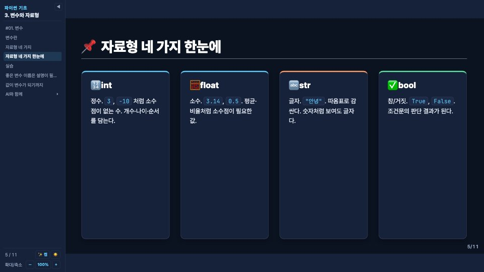
magazine — 웹진형
왼쪽에는 큰 제목과 리드문(제목 바로 다음 문단, 크고 회색, 아래에 짧은 그라디언트 선), 이어서 본문. ::right:: 아래에 쓴 내용은 오른쪽 칸(그림 · 카드 · 콜아웃)에 놓인다. 오른쪽 칸의 첫 요소가 <img>면 칸이 옅은 파란 띠가 되어 그림이 여백 없이 세로로 가득 차고(가장자리까지, 넘치는 부분은 잘라 맞춤) 그 아래 문단은 설명 띠가 된다. 그림이 아니면 바탕색 없이 본문과 같은 바탕이다. ::right::가 없으면 한 단이 된다.
---
layout: magazine
---
## 좋은 변수 이름은 설명이 필요 없다
이름만 보고도 무엇이 들어 있는지 알 수 있어야 한다.
- 소문자와 밑줄로 잇는다: `user_name`
- 숫자로 시작할 수 없다
::right::
<div class="card py">
<h3>좋은 예</h3>
<p><code>birth_year</code>, <code>is_member</code></p>
</div>
<Callout kind="tip">
읽는 사람이 미래의 나라고 생각하고 짓는다.
</Callout>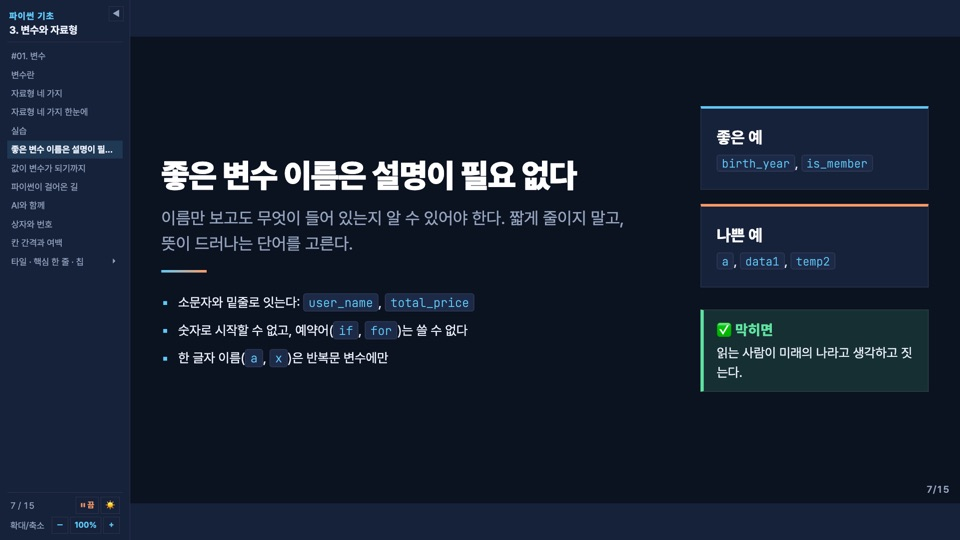
infographic — 인포그래픽
제목 아래 내용이 가운데 정렬된 무대에 놓인다. 흐름은 Flow, 숫자는 Stat, 나란히 놓을 때는 Grid를 쓴다.
---
layout: infographic
---
## 값이 변수가 되기까지
<Flow>
<li>⌨️<b>입력</b>키보드로 받은 글자</li>
<li>🔁<b>변환</b><code>int()</code> 로 숫자로</li>
<li>📦<b>저장</b>변수에 담는다</li>
</Flow>
<Grid cols="3">
<Stat value="4" label="기본 자료형" />
<Stat value="1" unit="줄" label="변수를 만드는 코드" color="ai" />
<Stat value="0" unit="원" label="이름표를 붙이는 비용" color="ok">바꿔 달 수도 있다</Stat>
</Grid>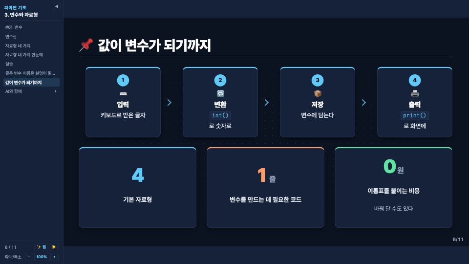
컴포넌트
Grid — 격자 배치
슬라이드 안의 원하는 곳을 여러 단으로 나눈다. 제목은 Grid 위에 두면 전체 폭으로 보인다. 칸 안에 마크다운(코드 블록·목록)을 쓰려면 칸마다 <div>로 감싸고, 여는 태그와 닫는 태그를 빈 줄로 띄운다.
| 프롭 | 뜻 | 기본 |
|---|---|---|
cols | 열 수(2, 3) 또는 grid-template-columns 값("1fr 400px") | 2 |
gap | 칸 사이 간격. 숫자 하나면 가로·세로 모두(px), 두 개면 "세로 가로"(예: "8 32" → 행 8px · 열 32px). 단위를 붙이면(0.5rem) 그대로 | 32 |
align | align-items 값(예: start) | - |
title | 격자 위에 붙는 작은 제목 | - |
## 실습 — 자기소개 출력
<Grid cols="2">
<div>
왼쪽 칸…
</div>
<div>
```python
print(f"{name}님은 {age}살")
```
</div>
</Grid>
<Grid cols="2" gap="6 32">
<div>행 사이는 6px, 열 사이는 32px</div>
<div>짧은 항목을 바둑판으로 놓을 때</div>
<div class="tight">
이 칸 안의 블록 간격은 촘촘하게
</div>
<div>…</div>
</Grid>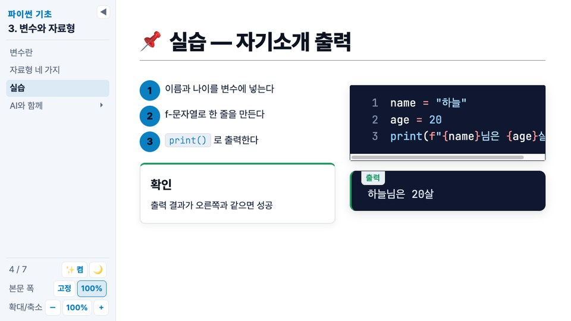
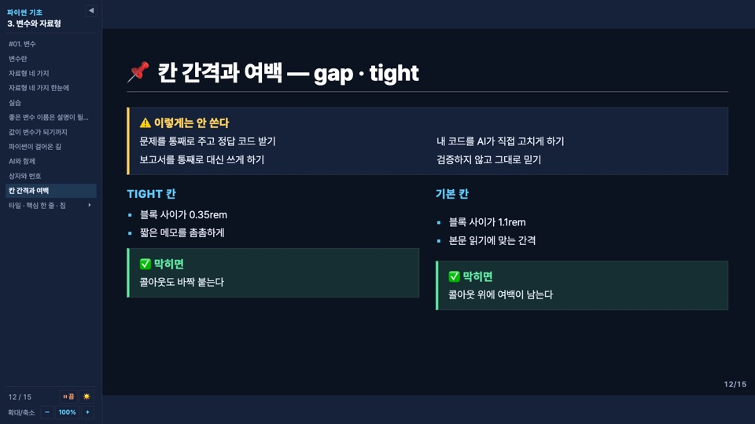
Callout — 상자
머리말이 있는 상자 하나로 콜아웃 · 프롬프트 · 출력 · 번호 머리띠를 그린다. kind로 묶음(아이콘 · 머리말 · 색 · 바탕)을 고르고, 나머지 프롭으로 그 묶음을 세부 조정한다. Prompt · Output은 이 컴포넌트의 짧은 이름이다. 안에 마크다운(인라인 코드·굵게·목록)을 쓰려면 여는 태그와 닫는 태그를 빈 줄로 띄운다. 본문 없이 title만 주면(<Callout title="…"></Callout>) 머리말 한 줄짜리 상자가 되고 위아래 여백이 같다.
| kind | 머리말 | 색 · 바탕 |
|---|---|---|
eli5(기본) | 💡 쉽게 말하면 | 노랑 |
real | 🧭 현업에서는 | 파랑 |
tip | ✅ 막히면 | 초록 |
warn | ⚠️ 주의 | 주황, 바탕은 연한 회색 |
danger | ⛔ AI에게 주면 안 되는 것 | 빨강 |
ai | 🤖 AI와 함께 | 주황 |
prompt | 📋 프롬프트 실습 | 주황. 복사 버튼이 붙고 본문을 cols로 나눈다 |
output | 출력 (왼쪽 위 라벨) | 초록, 어두운 바탕, 고정폭 글꼴 |
plain | 없음 | 파랑, 카드 바탕. n이나 color만 주면 이것이 기본 |
| 프롭 | 뜻 | 기본 |
|---|---|---|
title | 머리말 글. 묶음의 기본 머리말을 바꾼다 | 묶음의 머리말 |
icon | 머리말 앞 아이콘(이모지 · 글자). ""를 주면 아이콘을 뺀다 | 묶음의 아이콘 |
color | 테두리 · 머리말 색. py ai ok yellow warn danger muted pastel-1~6 또는 CSS 색(#0a7fc2, tomato). 바탕은 그 색을 옅게 깐다 | 묶음의 색 |
n | 왼쪽 번호 상자(정사각). 템플릿 번호 · 단계 번호처럼 상자를 머리띠로 쓸 때. 아이콘은 빠지고 머리말은 제목색, 본문은 작게 | - |
tag | 머리말 오른쪽 테두리 글(분류 · 패턴 이름) | - |
copy | 오른쪽 위 복사 버튼. 본문 글을 클립보드에 넣는다 | prompt만 켬 |
cols | 본문 단 수. 2 이상이면 본문이 여러 단으로 이어 흐른다(긴 프롬프트) | 1 |
class="small" | 본문 글자를 0.82rem로(프롬프트 · 출력 포함). Grid 칸처럼 좁은 자리에 상자를 넣을 때 | - |
<Callout kind="eli5">
상자에 이름표를 붙여 두면, 나중에 상자를 열지 않아도 이름만으로 찾을 수 있다.
</Callout>
<Callout kind="warn" title="자주 틀리는 것">
`"3" + 4` 는 오류다. 글자와 숫자는 더할 수 없다.
</Callout>
<Callout icon="📌" title="오늘의 약속" color="ok">코드는 내가 쓴다</Callout>
<Callout n="3" title="내 분류 채점받기" tag="초안 검토" color="ai"><b>언제?</b> 비슷한 것들이 헷갈릴 때</Callout>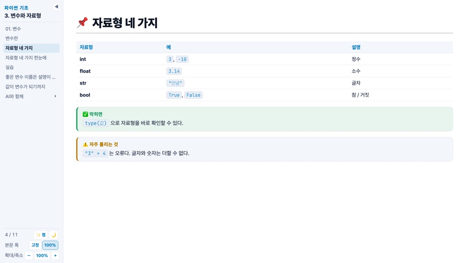
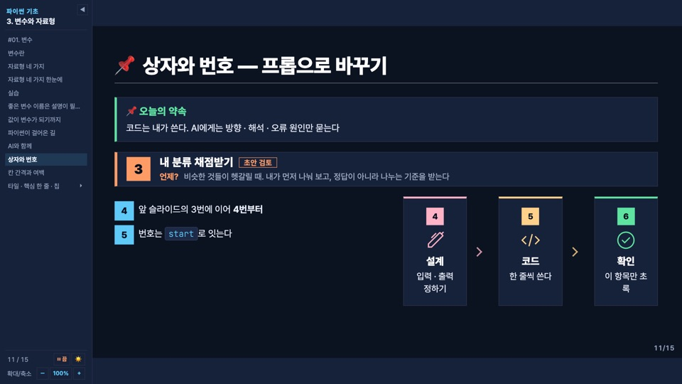
Prompt · Output — 프롬프트와 출력
Prompt는 <Callout kind="prompt">의 짧은 이름이다. 안에 백틱 네 개의 text 코드 펜스로 프롬프트를 넣으면 줄바꿈이 보존되고, 오른쪽 위 복사 버튼이 그 글을 클립보드에 넣는다. 펜스 언어를 md로 쓰면 제목(##)·목록 기호와 안에 넣은 ```python 코드에 색이 입혀진다(밝은·어두운 테마 모두). title로 머리말(기본 "프롬프트 실습")을 바꾸고, cols="2"를 주면 프롬프트 글이 두 단으로 이어 흘러 긴 프롬프트를 빈 줄 그대로 한 슬라이드에 넣을 수 있다(복사는 전체). Output은 <Callout kind="output">의 짧은 이름으로, 프로그램 출력 상자다. label(기본 "출력")로 왼쪽 위 라벨을 바꾼다. 안에 코드 펜스를 넣어도 상자와 한 몸으로 보이므로(펜스의 배경·테두리·줄 번호가 빠진다) < 같은 글자가 든 출력을 이스케이프 없이 그대로 둘 수 있다.
<Prompt>
````text
변수 이름을 지을 때 지켜야 할 규칙 3가지를
초등학생도 이해할 수 있게 예시와 함께 설명해 줘.
````
</Prompt>
<Prompt title="연습 — 내 설명 점검받기" cols="2"> … </Prompt>
```python
print(f"{name}님은 {age}살")
```
<Output>
하늘님은 20살
</Output>
<Output label="오류">
TypeError: can only concatenate str (not "int") to str
</Output>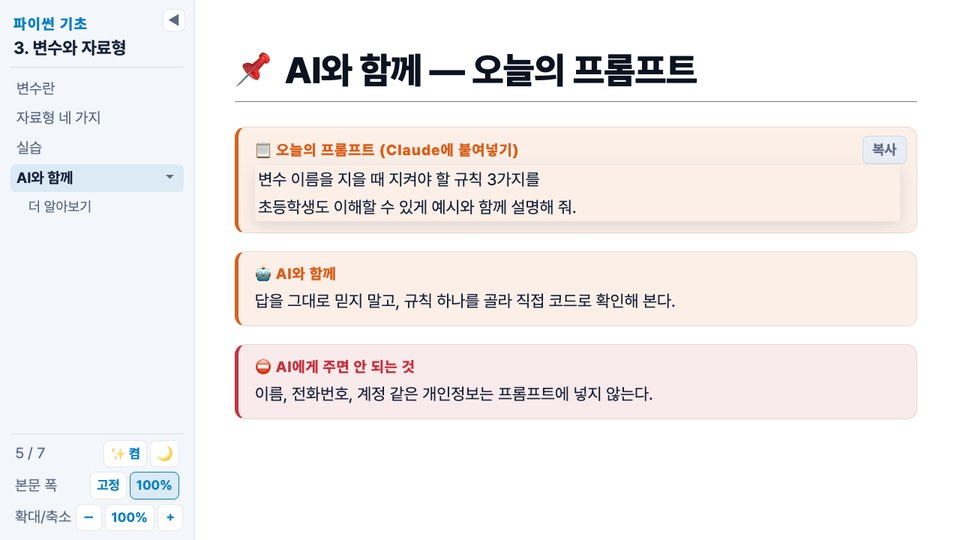
Steps — 번호 목록
<li>를 나열하면 번호가 붙는다. type으로 모양을 고른다: list(기본)는 번호 상자 세로 목록, flow는 가로 흐름도(직각 상자), timeline은 선 위의 네모 점. Flow · Timeline은 각각 type="flow" · type="timeline"의 짧은 이름이다.
| 프롭 | 뜻 | 기본 |
|---|---|---|
type | list · flow · timeline | list |
color | py(파랑) · ai(주황) · ok(초록) · pastel(항목마다 분홍 · 살구 · 버터 · 민트 · 하늘 · 라벤더를 돌아가며). 항목 하나만 바꾸려면 <li class="ai">처럼 항목에 색 이름(py ai ok yellow danger pastel-1~6)을 준다 | py |
start | 첫 번호(list · flow). 앞 슬라이드에서 이어 번호를 붙일 때 | 1 |
vertical | timeline을 세로(왼쪽 선)로 | - |
center | timeline의 점과 글을 칸 가운데에. 표지처럼 가운데 정렬된 자리에 둘 때 양 끝이 대칭이 된다 | - |
<Steps color="py">
<li>이름과 나이를 변수에 넣는다</li>
<li>f-문자열로 한 줄을 만든다</li>
<li><code>print()</code> 로 출력한다</li>
</Steps>
<Steps start="4">
<li>앞 슬라이드의 3번에 이어 4번부터</li>
</Steps>
<Flow color="pastel">
<li><carbon:idea /><b>이해</b>분홍</li>
<li><carbon:flag /><b>시작</b>살구</li>
<li class="ok"><carbon:search /><b>확인</b>이 항목만 초록</li>
</Flow>Flow — 가로 흐름도
<Steps type="flow">의 짧은 이름. <li>를 나열하면 번호 상자가 나란히 놓이고 사이에 꺾쇠 화살표가 붙는다. <li> 안의 첫 <b>는 상자 제목이고 그 앞에 이모지를 둘 수 있다. color는 py(파랑, 기본) · ai(주황) · ok(초록) · pastel(항목마다 다른 파스텔 색), start는 첫 번호. 상자 맨 앞에 Iconify 아이콘(<carbon:idea />)을 두면 번호 아래 그 색으로 크게 놓인다. 상자가 많아 좁아지면 줄을 바꾼다.
<Flow color="ok">
<li>📥<b>수집</b>관찰 · 설문 · 실험</li>
<li>🧮<b>요약</b>표 · 그래프 · 통계량</li>
<li>🔍<b>분석</b>추론 · 예측</li>
</Flow>Timeline — 타임라인
<Steps type="timeline">의 짧은 이름. <li>를 나열하면 선 위에 네모 점이 찍히고 그 아래에 내용이 놓인다. <li> 안의 첫 <b>는 시점(날짜 · 시간 · 단계 이름)으로 색 글씨가 된다. <li class="now">는 점을 채워 "지금 여기"로 강조한다. 항목이 많으면 vertical로 세로(왼쪽 선)로 놓는다. center를 주면 점과 글이 칸 가운데에 놓여 표지처럼 가운데 정렬된 자리에 어울린다. color는 py(파랑, 기본) · ai(주황) · ok(초록).
<Timeline>
<li><b>1991</b>귀도 반 로섬이 첫 버전을 공개</li>
<li><b>2008</b>파이썬 3.0</li>
<li class="now"><b>오늘</b>3강 변수와 자료형</li>
</Timeline>
<Timeline color="ai" vertical> … </Timeline>
<Timeline color="ai" center> … </Timeline> <!-- 표지 등 가운데 정렬 자리 -->Stat — 큰 숫자 타일
value는 큰 숫자(글), unit은 옆에 작게 붙는 단위, label은 아래 한 줄 설명. color는 py · ai · ok. 슬롯에 보충 설명을 넣을 수 있고, 여러 개는 Grid로 나란히 둔다.
<Grid cols="2">
<Stat value="1,024" unit="TB" label="= 1 페타바이트" />
<Stat value="4" unit="PB" label="페이스북이 하루에 만드는 데이터" color="ai">2021년 기준</Stat>
</Grid>Tile — 타일
1px 가는 선과 4px 윗선이 있는 직각 상자에 tag(작은 라벨) → title(굵은 제목) → value(큰 숫자) → 본문(슬롯) 순서로 쌓는다. 네 가지 모두 생략할 수 있다. 여러 개는 Grid로 나란히 두고, 카드형(cards) 레이아웃에서는 타일이 그대로 칸이 된다. 본문에 마크다운(목록)을 쓰려면 여는 태그와 닫는 태그를 빈 줄로 띄운다.
| 프롭 | 뜻 | 기본 |
|---|---|---|
kind | plain 카드 바탕 · surface 연한 회색 바탕(선 없음) · soft color를 옅게 깐 바탕 · fill 반전(밝은 테마에서는 어두운 바탕에 밝은 글자, 어두운 테마에서는 그 반대) | plain |
color | 윗선 · 라벨 · 숫자 색. py ai ok yellow warn danger muted pastel-1~6 또는 CSS 색 | py |
tag | 위 작은 라벨(분류 · 묶음 이름) | - |
title | 굵은 제목 | - |
value | 큰 숫자(글) | - |
<Grid cols="3" gap="12">
<Tile tag="입력" title="값 하나" kind="soft">age = 20 처럼 = 로 넣는다</Tile>
<Tile tag="변환" title="이름표 붙이기" kind="fill" color="ai">변수 이름으로 값을 다시 꺼낸다</Tile>
<Tile tag="결과" value="4" color="ok">기본 자료형의 수</Tile>
</Grid>Core — 핵심 한 줄
슬라이드의 결론을 왼쪽 세로 막대와 함께 굵고 크게 적는다. 슬라이드의 마지막 블록으로 두면 남은 높이를 건너뛰어 캔버스 맨 아래에 붙는다(웹진형의 왼쪽 칸 안에서는 흐름대로). color는 막대 색(py 기본 · ai · ok · yellow · warn · danger · muted 또는 CSS 색).
<Core>값에 이름표를 붙이면, 이름만으로 값을 꺼내 쓴다</Core>
<Core color="ok">맑고 비 없는 <span class="hl ok">토요일</span> 출발</Core>Chip — 칩
글 사이에 끼우는 작은 직각 라벨(분류 · 검색어 · 상태). 문단 안에 <Chip>…</Chip>으로 쓴다. 줄 맨 앞에 Chip이 오면 Slidev가 그 줄을 블록으로 취급해 문단이 사라지고 칩이 한 줄씩 늘어서므로, 그때는 줄 전체를 <p>…</p>로 감싼다. kind는 soft(기본, 1px 색 테두리에 옅은 바탕) · outline(2px 테두리만) · dashed(2px 점선) · fill(연한 회색 바탕), color는 py(기본) ai ok yellow warn danger muted ink 또는 CSS 색.
<p><Chip color="ai">자료형</Chip> int · float · str · bool · <Chip kind="fill">함수</Chip> type()</p>
이 줄은 글로 시작하므로 그대로: <Chip kind="outline" color="ink">필수</Chip> <Chip kind="dashed" color="muted">선택</Chip>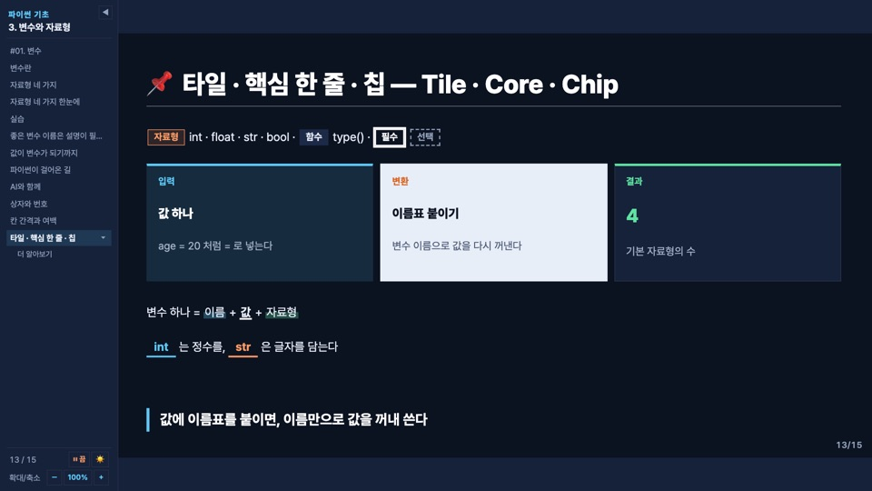
아이콘
Slidev에 내장된 Iconify 세트(carbon · ph)를 컴포넌트처럼 쓴다. 예: <carbon:bot />, <ph:robot />. 이름은 icon-sets.iconify.design에서 찾는다. 카드(.card · 카드형 칸) 안에서 class="ico"를 주면 제목 위에 크게, 카드 색으로 놓이고, Flow 항목 맨 앞에 두면 번호 아래 크게 놓인다. 제목 안에 그냥 두면 글자 크기로 앞에 붙는다.
<div class="card py"><carbon:chat class="ico" /><h3>AI의 답이 마크다운</h3><p>…</p></div>
#### <carbon:machine-learning-model /> LLM의 모국어YoutubeCard — 유튜브 썸네일
Slidev 내장 Youtube 대신 쓴다(프롭 같음: id · width · height). 처음엔 영상 썸네일과 재생 버튼만 보여 주고, 누르면 그 자리에서 재생한다. 내보낸 HTML을 파일로 직접 열면(file://) 유튜브가 리퍼러 없는 임베드를 "구성 오류"로 막으므로, 그때는 유튜브 페이지를 새 탭으로 연다. PDF·PNG 내보내기에는 썸네일이 찍힌다.
<YoutubeCard id="3VG2OgkRJK0" width="100%" height="280" />클래스
| 클래스 | 뜻 |
|---|---|
.card | 직각 카드(1px 선, 4px 윗선). 윗선은 기본 파랑이고 .py .ai .ok를 함께 주면 그 색(파랑·주황·초록). 안에 <h3>와 <p> |
.kicker | 대문자 라벨(파랑, 본문보다 조금 큼). .ai 주황, .lab 초록 |
.muted | 회색 글 |
.small | 작은 글 |
.sub | 표지의 부제. 테두리 상자로 보인다 |
.hl | 형광펜. 글자 아래쪽 절반에 옅은 색 띠. .ai .ok .yellow .warn .danger로 색을 바꾸고, .ink는 띠 대신 굵은 밑줄. v-click을 주면 숨김 대신 띠가 왼쪽에서 오른쪽으로 칠해진다 |
.blank | 빈칸. 밑줄 친 답. v-click과 data-ph="○○"를 주면 답이 나오기 전까지 자리표시가 회색으로 보인다. .ai .ok .danger로 색 |
.fill-img | 슬라이드 맨 아래 블록으로 두면 안의 그림을 남은 세로 공간에 비율 그대로 최대한 크게 보여 준다(스크롤 없음). 여러 장은 안에 .fill-in을 두고 <figure>마다 그림을 .pic으로 감싼다 |
.tight .flush | 안쪽의 블록 간격(요소 아래 여백)을 촘촘하게(.tight, 0.35rem) 또는 0으로(.flush). Grid 칸·카드·어느 요소에나 주고, 프런트매터 class: tight로 슬라이드 전체에도 준다. 카드형(cards)의 카드 사이는 격자 gap이라 영향이 없다 |
| UnoCSS 유틸리티 | Slidev에 내장된 UnoCSS 클래스(mb-0 mt-2 p-0 text-center …)를 칸이나 요소에 그대로 쓴다. 테마 규칙은 우선순위를 올리지 않으므로(:where()) 유틸리티가 이긴다 |
class: dense | 슬라이드 프런트매터에 적으면 그 슬라이드의 코드 상자와 프롬프트 상자가 촘촘해진다(글자 크기는 그대로, 줄간격 1.6 → 1.3). 긴 코드 예제가 캔버스를 넘칠 때 내용이나 빈 줄을 줄이지 않고 맞춘다 |
### 더 알아보기 — 형 변환
<span class="kicker lab">정리</span>
변수 하나 = <span class="hl" v-click>이름</span> + <span class="hl ink" v-click>값</span> + <span class="hl ok" v-click>자료형</span>
<span class="blank" data-ph="○○" v-click>int</span> 는 정수를, <span class="blank ai" data-ph="△△" v-click>str</span> 은 글자를 담는다
<div class="card py">
<h3>int("12") → 12</h3>
<p>문자열을 정수로 바꾼다. 숫자가 아닌 글자가 섞이면 오류가 난다.</p>
</div>
- <span class="muted">다음 시간: 조건문</span>
<div class="fill-img"><img src="./img/sampling.png" alt="표본 추출 도식" /></div>
<div class="fill-img"><div class="fill-in">
<figure><div class="kicker">left_join</div><div class="pic"><img src="./img/left.png" alt="left_join" /></div></figure>
<figure><div class="kicker">집합의 개념</div><div class="pic"><img src="./img/set.png" alt="집합" /></div></figure>
</div></div>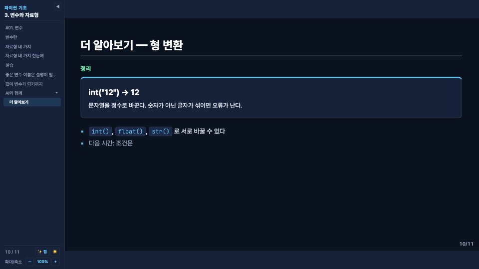
### 슬라이드(목차에서 들여쓰기) · kicker lab · card py전체 예제
lecture-example.md — 위 코드가 전부 들어 있는 예제 덱. 저장소 안에서 우클릭 → Open with Slidev.